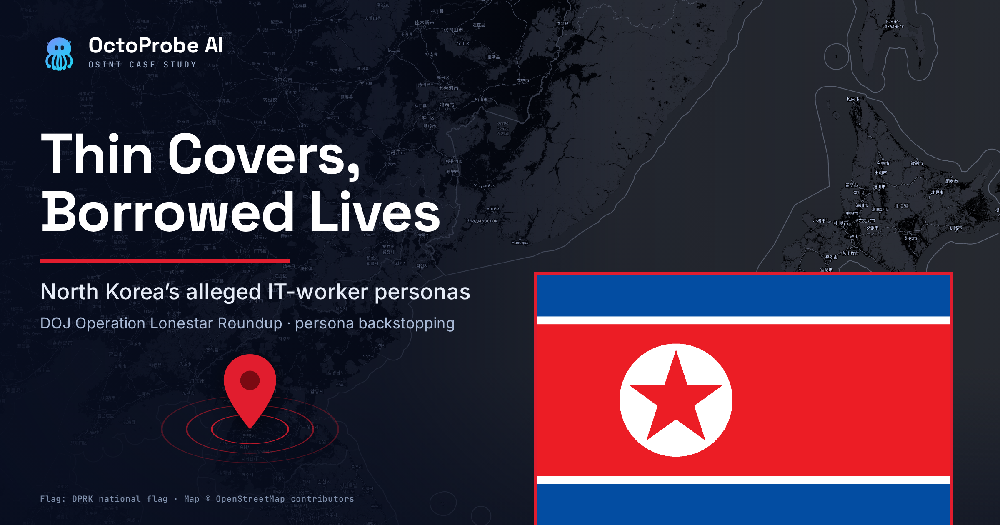
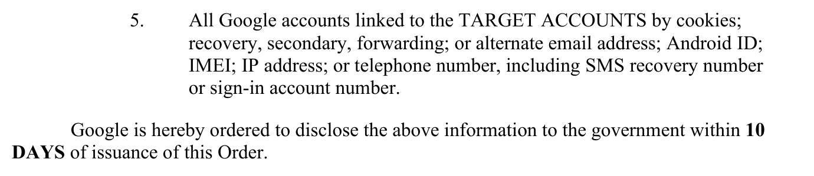
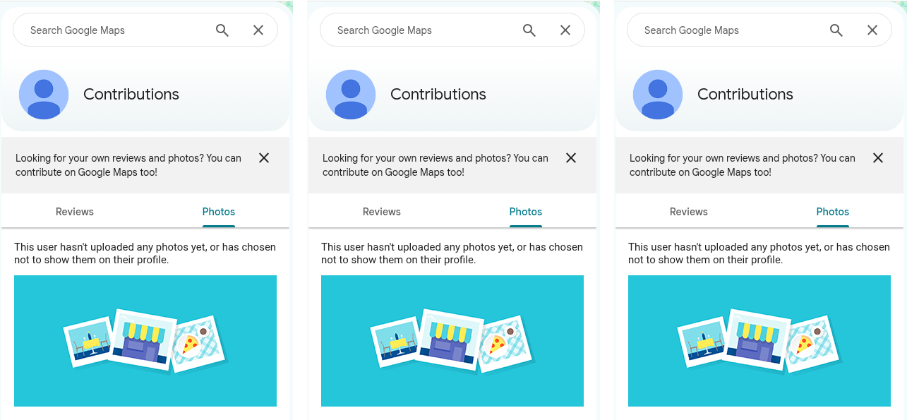
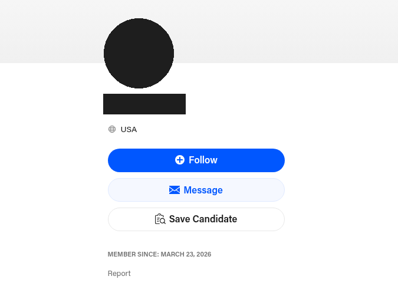
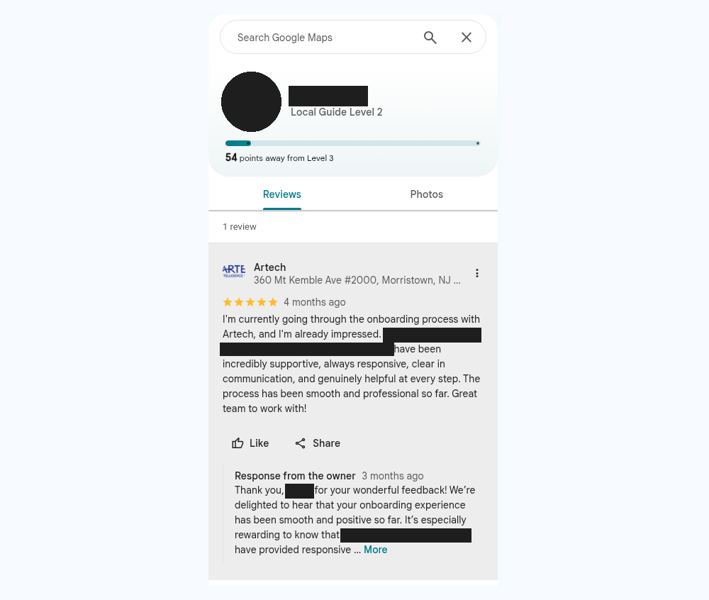
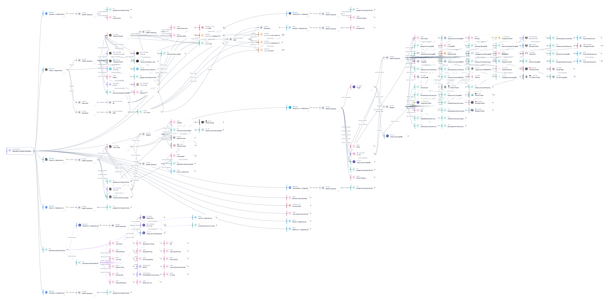
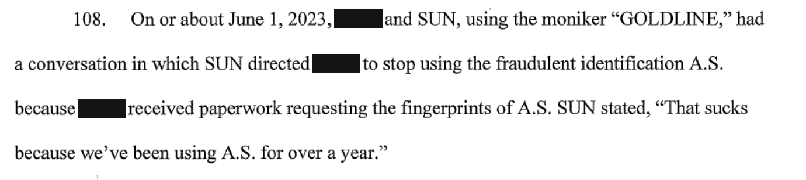
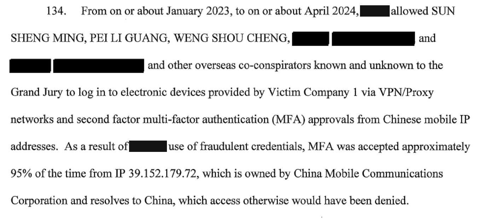

Most of the eleven Gmail accounts that the Justice Department tied to North Korean IT workers in Operation Lonestar Roundup had thin covers: sign-ups to job tools, empty Google Maps profiles, and accounts only months old. One account was different. It sat on top of what looks like a real American's long online history, the kind of borrowed history the FBI warns about.
OctoProbe ran every address through public sources between October 19 and 20, 2026. We looked at Google Maps contributor profiles, social and professional networks, freelancer sites, account creation dates, and breach records. Then we checked whether any of the eleven personas shared a phone, a recovery email, or a name.
They did not. The cover stories were kept apart from each other. The weak points were inside each persona.
Key Findings
- Thin covers were the norm. Ten of the eleven addresses had at least one public account sign-up. Most were job-hunting tools like Zoom, Calendly, HackerRank, and freelancer sites. One returned nothing at all. (Medium confidence; sign-up checks can misfire.)
- Empty Google Maps profiles. Eight of the eleven Google accounts have a public Maps contributor page. Only two show any activity. (High confidence for the three pages we captured; medium for the rest.)
- New accounts. Where we could date an account, most were created in 2025 or 2026. (Medium-high confidence.)
- One persona reviewed a staffing firm. The "J.Y." persona left a single five-star Google review of Artech, an IT staffing firm in Morristown, New Jersey, about its onboarding process. Artech is not accused of anything. (High confidence the review exists; low confidence on what it means.)
- One account rode a real person's footprint. The "R.G." account carries years of activity across several platforms under one consistent, real-looking name. (High confidence the footprint exists; low confidence on who controls it.)
- No cross-links found. No shared phone, recovery email, or name connects any two of the eleven in public data. (Medium-high confidence.)
What DOJ Announced, and What It Did Not Say
On October 13, 2026, the Justice Department announced charges against fourteen people, two arrests, and the seizure of approximately 187 computer devices. Between September 21 and September 25, the FBI searched more than forty Texas residences known or suspected to be "laptop farms." A laptop farm is a home where a U.S. helper keeps company laptops running so that workers abroad can log in and appear to be in America.
A federal grand jury in the Northern District of Ohio returned the indictment. It charges two Americans, Michael James Bostelle and Juan Cecilio Pena Carrillo, and ten China-based defendants. Two more defendants remain under seal. The U.S. Attorney's Office in Ohio said the alleged scheme reached more than seventy U.S. companies. The defendants are presumed innocent unless proven guilty.
The Justice Department also wrote that "Investigators discovered that the DPRK operatives allegedly used a network of fraudulent email accounts to facilitate their criminal activity." It then listed eleven Gmail addresses in full in its press release. We mask them here: B***8, M***z, r***g, m***2, a***1, d***g, d***1, y***5, t***n, a***2, and t***8, all at gmail.com.
The same addresses appear in a court order from the Northern District of Texas. It orders Google to hand over records on each account. The government's application describes the accounts "as being utilized by DPRK IT workers to fraudulently obtain employment in the United States." The Texas U.S. Attorney's Office announced the Lonestar searches.
DOJ does not say which defendants, if any, used these eleven accounts. Nothing in this article ties the Gmail list to Bostelle or Pena.
The order also asks Google for "All Google accounts linked to the TARGET ACCOUNTS by cookies; recovery, secondary, forwarding; or alternate email address; Android ID; IMEI; IP address; or telephone number, including SMS recovery number or sign-in account number." In plain terms, investigators want every other account the same people touched.

How Thin Were the Personas?
Thin. The common pattern was a job seeker's starter kit: Zoom, Calendly, HackerRank, Fiverr or Freelancer, the Indian job board Naukri, Replit, Canva, and Grammarly.
Those tools are everywhere. Millions of real job seekers use them. So they describe the cover; they do not link one persona to another.
One address, M***z, returned nothing on any source we checked.
Google Maps told the same story. Eight of the eleven Google accounts expose a public Maps contributor page. Six of those eight are blank. We captured three of the empty pages ourselves, for a***2, t***8, and y***5. Three more read as empty in our lookup data but were not captured.

The accounts we could date were young:
- A.K. (a***1): A Microsoft profile under an obviously invented name, created January 8, 2026, plus a Freelancer account.
- A.O. (a***2): A Microsoft account created June 9, 2025, plus HackerRank, Adobe, and Zoom.
- B***8: A Trello account created April 28, 2025, and last active the same minute. It was made and abandoned. We read that date from Trello's account ID, which embeds its creation time.
- J.Y. (d***g): A Behance portfolio page created March 23, 2026.

The CrowdStrike report that DOJ linked lists "New public profiles on LinkedIn, Twitter, GitHub, or freelancer platforms" as a warning sign. That fits what we found.
The "J.Y." Persona Reviewed a Staffing Firm
The J.Y. persona (d***g) had the most consistent cover. The same display name appears on the Google account, a Google Maps Local Guide profile, and Behance. The address is also registered with Calendly, HackerRank, Naukri, and Zoom.
Its single Maps review is a five-star review of Artech, an IT staffing firm, at its Morristown, New Jersey, office. Google showed it as "4 months ago" on October 20, 2026, which puts it around June 2026.
The excerpt reads: "I'm currently going through the onboarding process with Artech, and I'm already impressed. [three named recruiters] have been incredibly supportive, always responsive, clear in communication, and genuinely helpful at every step." The review names three Artech recruiters. We do not repeat their names.
An owner response thanked the reviewer.

Artech is not accused of wrongdoing. Nothing shows the company knew who was behind the account. Staffing firms are a normal route into IT contract work, and that is why a cover persona might use one.
The review tells us the persona was used for a real job process in mid-2026. It does not tell us which company, if any, hired the person behind it.
We also found a GitHub account and a TikTok account under a similar handle. The GitHub account was created August 1, 2024, holds no code, and follows two university course accounts in New Zealand. The TikTok account dates to 2018. Both look like unrelated people who share a common name. We do not link them to the persona.
One Account Rode a Real Person's Footprint
The r***g account looks nothing like the others. Under one consistent, real-looking name, which we abbreviate R.G., it carries years of activity. That includes a professional networking profile with hundreds of followers, a Google Maps profile with reviews and edits, and accounts on Etsy and Behance dating to 2020. Its details also appear in a large 2021 data breach.
That is exactly the pattern the FBI described in its October 13 public service announcement: "ITWs pay to use, and apply for employment with, facilitators' social media or professional networking accounts which often contain years of legitimate activity history." ITWs is the FBI's shorthand for IT workers.
We cannot tell whether R.G. is an identity-theft victim, a paid account renter, or someone who has no idea. So we withhold the name, location, and employer.
The Ohio indictment also uses the initials "R.G." for one identity used on company laptops. That may be a different person. We do not suggest a match.
Where the OPSEC Cracked
OPSEC, short for operational security, is the discipline of not leaving traces. The personas mostly failed inside their own walls.
Stolen-password logs. The D.T. persona's (d***1) login details appear in a compilation of infostealer logs, data swept from infected computers, and in a 2025 list of stolen logins. We do not publish the password.
Mixed geography. The same D.T. address has more than thirty sign-ups since 2021. Its Microsoft profile was created November 20, 2021, with Germany as the country. Its WPS Office account lists Russia.
A borrowed handle. D.T.'s Trello account, created June 19, 2021, uses a short word-and-number handle. That handle also exists on more than thirty other sites. Those accounts belong to plainly different people, from a German Envato member since 2017 to a chess account closed in 2018. One reused handle can pull strangers into an investigation. We publish none of those profiles.
No cross-persona links. We found no shared phone, recovery email, or name between any two of the eleven. Both phone numbers in our graph trace to R.G.'s breach records, not to another persona.
That is worth saying plainly. CrowdStrike reported that "Network infrastructure within laptop farms was found sharing identifiers across multiple concurrent fake personas, a sign of the operation's scale and coordination." That finding concerns network data that only investigators can see. At the public layer, the walls between these eleven personas held.


What the Ohio Indictment Alleges About Building Personas
The Ohio case is separate from the Texas Gmail list. Its allegations show what a fuller cover looks like.
Prosecutors allege that a China-based defendant directed an uncharged Ohio man to create LinkedIn and other professional accounts so fake résumés could attract employers (¶95, p. 19). The indictment lists diplomas from Charter University, an unaccredited online school (¶90, p. 16).
It also describes shell companies. Dark Falls LLC came with websites (¶12, p. 5; ¶17, p. 6). B Succeed LLC, a Texas company, was allegedly used for employment checks (¶28, pp. 8–9).
Real phones mattered. In one exchange, a co-conspirator wanted the Ohio man's number for verifications "because it was not a VOIP number" (¶106, p. 21). In another, an actor was allegedly hired to sit an in-person job interview (¶120, p. 23).
The failures are just as telling. A fingerprint request burned one stolen identity. A China-based defendant allegedly said, "That sucks because we've been using A.S. for over a year."

Logins gave the game away too. The indictment alleges that "MFA was accepted approximately 95% of the time from IP 39.152.179.72, which is owned by China Mobile Communications Corporation and resolves to China" (¶134). MFA, or multi-factor authentication, is the second login check, such as a code sent to a phone.

Other alleged slips: a persona Gmail (m***e@gmail.com) was reached from an Akron, Ohio, internet address (¶129, p. 25). Laptops were moved so companies would not catch the scheme through IP tracing (¶110, pp. 21–22). A list of companies was kept so that no address received laptops for several fake employees (¶115, p. 22).
When the uncharged Ohio man was told to register a Texas company to open bank accounts, he allegedly replied, "It looks like money laundering." (¶102, p. 20).
Scorecard
| Persona | Name seen | Maps activity | Datable accounts | Backstop depth |
|---|---|---|---|---|
| B***8 | Trello display name only | None surfaced | Trello, April 2025 | Thin |
| M***z | None | None | None | None found |
| R.G. (r***g) | Consistent, real-looking | Reviews and edits | 2020–2022 | Deep, likely borrowed |
| m***2 | None | Empty | Google, last seen 2024 | Thin |
| A.K. (a***1) | Obviously invented | None surfaced | Microsoft, January 2026 | Thin |
| J.Y. (d***g) | Consistent on three sites | One review | Behance, March 2026 | Moderate |
| D.T. (d***1) | Short handle | Empty | Microsoft and Trello, 2021 | Thin, exposed |
| Y.C. (y***5) | One site | Empty (captured) | None | Thin |
| t***n | None | Empty | Google, last seen 2024 | Thin |
| A.O. (a***2) | One site | Empty (captured) | Microsoft, June 2025 | Thin |
| t***8 | None | Empty (captured) | None | Thin |
The Pattern Is Not New
The FBI has warned about these schemes for years, in a 2022 joint advisory, a 2023 U.S.–South Korea notice, and public service announcements in May 2024, January 2025, and July 2025. DOJ announced earlier nationwide actions in June 2025 and November 2025.
The newest FBI notice adds a churn warning: "ITWs tend to rotate through bank accounts, street addresses, social media accounts or other identifiers at an unusually high rate due to account bans and other disruptions." Young, thin, single-use accounts are what that looks like from the outside.
Method and Limits
OctoProbe checked each address against public sources: account sign-up checks, breach-presence records, public profile pages, and page captures, then mapped the results onto an identifier graph. Page captures are dated October 19 and 20, 2026. We read every DOJ and FBI document directly. The Ohio indictment is a scanned PDF, so we checked each quote against the page image.
There are limits. Our lookup of the Google accounts themselves did not finish, so the Gmail addresses are undated. Account sign-up checks can return false positives. People-search sources returned nothing on Bostelle or Pena. Common tools like Zoom are not evidence that two accounts are linked.
Disclaimer
Charges are allegations. Every defendant is presumed innocent unless proven guilty in court. This article uses public sources only; OctoProbe is not a consumer reporting agency, and nothing here may be used for FCRA-covered decisions. Tips about North Korean IT-worker schemes go to the FBI at ic3.gov.